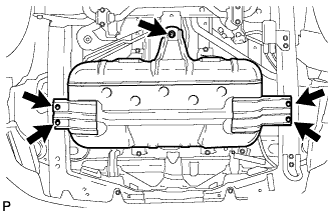
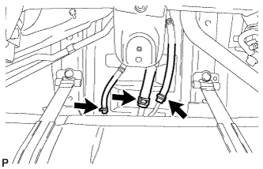
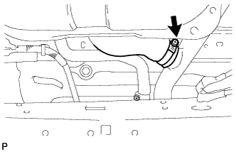
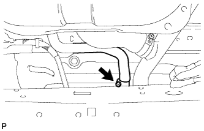
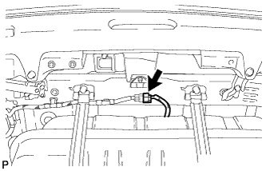
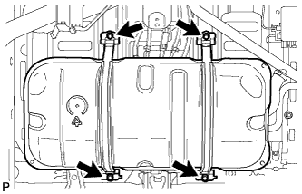
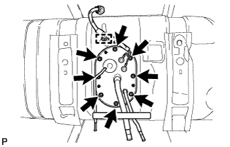
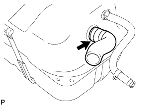
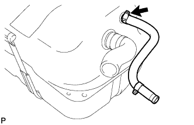

УЗЕЛ ТОПЛИВНОГО БАКА > СНЯТИЕ |
| 1. СБРОСЬТЕ ДАВЛЕНИЕ В ТОПЛИВНОЙ СИСТЕМЕ |
Сбросьте давление в топливной системе (Нажмите здесь).
| 2. ОТСОЕДИНИТЕ ПРОВОД ОТ ОТРИЦАТЕЛЬНОГО ВЫВОДА АККУМУЛЯТОРНОЙ БАТАРЕИ |
| 3. СНИМИТЕ ЭЛЕМЕНТ ЗАЩИТЫ №2 ТОПЛИВНОГО БАКА |
|  |
Выверните 5 болта и снимите защиту топливного бака № 2.
| 4. ОТСОЕДИНИТЕ ТОПЛИВНЫЙ ШЛАНГ |
|  |
Отсоедините шланг отвода паров топлива, шланг сапуна топливного бака и топливный шланг.
| 5. ОТСОЕДИНИТЕ ШЛАНГ, СОЕДИНЯЮЩИЙ ТОПЛИВНЫЙ БАК И НАЛИВНУЮ ТРУБУ |
|  |
Отсоедините шланг, соединяющий топливный бак и наливную трубу, от наливной трубы топливного бака.
| 6. ОТСОЕДИНИТЕ ШЛАНГ САПУНА ТОПЛИВНОГО БАКА |
|  |
Отсоедините шланг сапуна топливного бака от наливной трубы.
| 7. СНИМИТЕ РАСШИРИТЕЛЬНЫЙ ТОПЛИВНЫЙ БАЧОК В СБОРЕ |
|  |
Отсоедините разъем датчика уровня топлива.
Установите телескопический гидравлический домкрат под расширительным топливным бачком.
|  |
Выверните 4 болта и отсоедините 2 хомута крепления топливного бака.
Снимите расширительный топливный бачок.
| 8. СНИМИТЕ ПРОДУВОЧНЫЙ ПАТРУБОК ТОПЛИВНОГО БАКА В СБОРЕ |
|  |
Освободите зажим жгута проводов.
Выверните 8 винтов и снимите продувочный патрубок топливного бака.
Снимите прокладку с продувочного патрубка топливного бака.
| 9. СНИМИТЕ ШЛАНГ, СОЕДИНЯЮЩИЙ ТОПЛИВНЫЙ БАК И НАЛИВНУЮ ТРУБКУ |
|  |
Снимите шланг, соединяющий топливный бак и наливную трубу, с расширительного топливного бачка.
| 10. СНИМИТЕ ШЛАНГ САПУНА ТОПЛИВНОГО БАКА |
|  |
Снимите шланг сапуна топливного бака с расширительного топливного бачка.